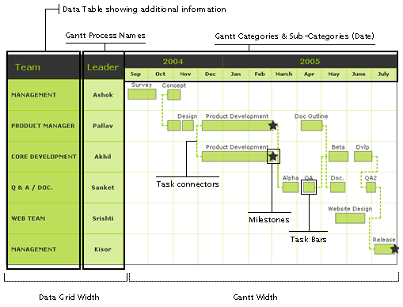

| Gantt Chart > Anatomy |
| FusionCharts Gantt chart consists of the following elements:
Here we’ll see each of them in detail. Let’s first have a look at a standard Gantt chart enlisting a few of the above elements:
|
|  |
| Categories and sub-categories (Dates) |
A Gantt chart is constructed with a horizontal axis representing the total time span of the project, broken down into increments (for example, days, weeks, or months). FusionCharts Gantt chart allows you to define any number of sub-categories to show dates broken into smaller units. For example, if you were to show a Gantt Chart spanning 2 years, you can the first sub-category as quarters, then divide these quarters into months, then weeks, and finally into days. This is all possible with FusionCharts Gantt Chart. |
| Process names |
| The vertical data table representing the tasks that make up the project (for example, if the project is outfitting your computer with new software, the major tasks involved might be: conduct research, choose software, install software) is called process names. |
| Data Table for showing additional information |
| If you need to provide more data pertinent to each process, you can show that data in an interactive and fully customizable data table. |
| Gantt Task Bars |
| Task Bars are horizontal bars of varying lengths that represent the sequences, timing, and time span for each task. |
| Milestones |
| Milestones are important checkpoints or interim goals for a project. You can represent them using stars, diamonds etc on FusionCharts Gantt Chart. |
| Trend Lines |
| Trend Lines can be used to show important dates on the chart - like today or scheduled date etc. |
| Hover Caption |
| FusionCharts Gantt chart supports hover caption (tool tip) for all the Gantt task bars. You can define your custom hover text to show additional information as tool tip. |